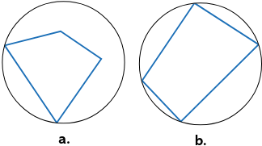
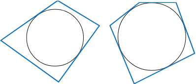
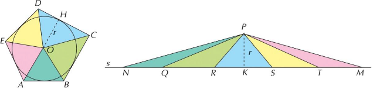
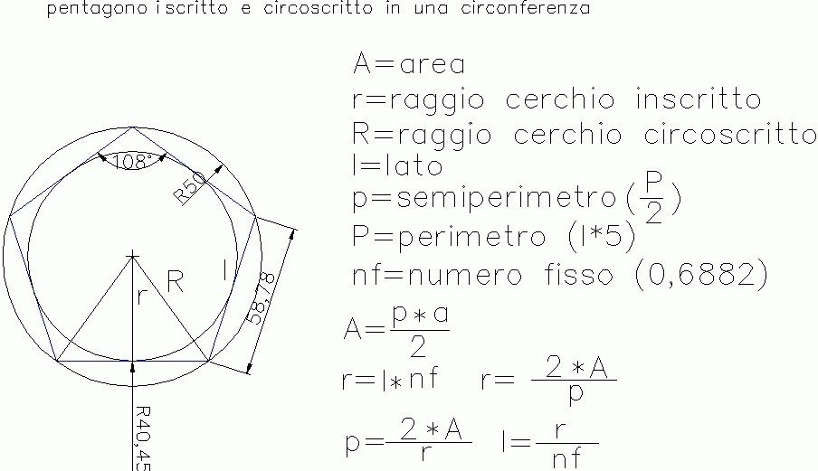

I poligoni iscritti e circonscritti
Osserviamo i due disegni della seguente figura:
in entrambi i casi il poligono è interno alla circonferenza, ma solo nel secondo caso tutti i suoi vertici sono punti della circonferenza. Un tale poligono si dice inscritto nella circonferenza e la circonferenza si dice circoscritta al poligono.
Definizione 1. Un poligono è inscritto in una circonferenza se tutti i suoi vertici appartengono alla circonferenza.
A sua volta la circonferenza si dice circoscritta al poligono. □
In un poligono inscritto in una circonferenza, tutti i vertici sono equidistanti dal centro, sono infatti gli estremi di altrettanti raggi:
Il raggio della circonferenza è anche raggio del poligono.
Triangoli inscritti e circoscritti
Poiché per tre punti non allineati del piano passa una e una sola circonferenza si può enunciate il seguente teorema.
Teorema. Ogni triangolo è inscrivibile in una circonferenza.
La circonferenza ha centro nel punto di intersezione degli assi dei lati del triangolo che, di conseguenza, viene detto circocentro.
Poligoni circoscritti a una circonferenza
Osserviamo i due disegni della seguente figura:
in entrambi i casi il poligono ha qualche punto in comune con la circonferenza e tutti gli altri punti esterni ad essa. Solo nel secondo caso, però, tutti i suoi lati sono tangenti alla circonferenza.
Un tale poligono si dice circoscritto alla circonferenza e la circonferenza si dice inscritta nel poligono.
Definizione. Un poligono si dice circoscritto a una circonferenza se tutti i suoi lati sono tangenti alla circonferenza.
Tutti i lati del poligono circoscritto sono equidistanti dal centro, le loro distanze dal centro sono infatti altrettanti raggi:
OP = OQ = OR = OS = OT
Teorema. Dato un poligono circoscritto a una circonferenza, è possibile costruire un triangolo equivalente avente base di lunghezza uguale al perimetro del poligono e altezza congruente all’apotema del poligono.
Proof. Per disegnare questo triangolo basta riportare i lati del poligono uno dopo l’altro sulla stessa retta e scegliere un punto qualsiasi sopra la retta in modo che la sua distanza da essa sia uguale al raggio della circonferenza inscritta.
Ciascun singolo triangolo è equivalente al rispettivo triangolo che ciascun lato del poligono forma congiungendo i suoi estremi con il centro della circonferenza inscritta. Pertanto, il triangolo totale è equivalente al poligono perché è dato dalla somma di figure equivalenti a quest’ultimo. □
Poiché ogni poligono regolare è circoscrivibile a una circonferenza, dal teorema precedente discende il seguente corollario.
Corollario. Un poligono regolare è equivalente a un triangolo avente base di lunghezza uguale al perimetro del poligono e altezza congruente all’apotema del poligono.
L’area di un poligono circoscritto a una circonferenza è quindi uguale all’area del triangolo equivalente, cioè alla metà del prodotto della misura del perimetro per la misura dell’apotema.
